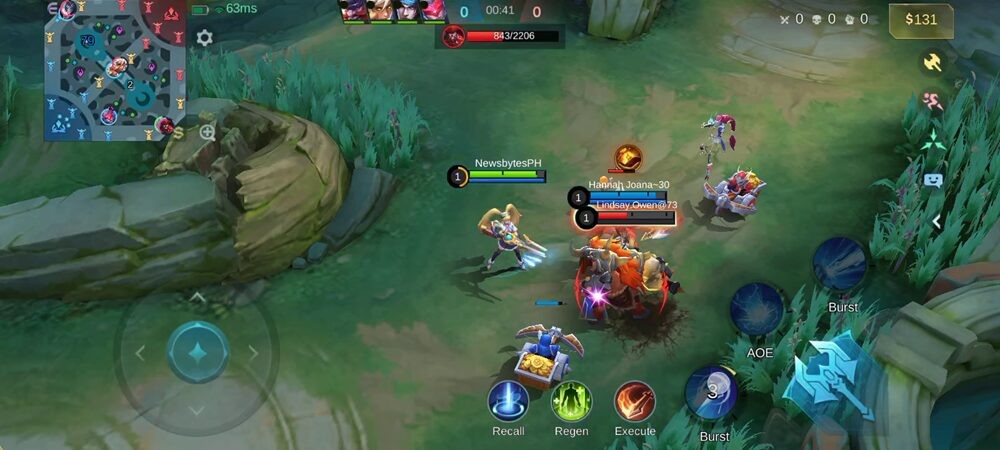
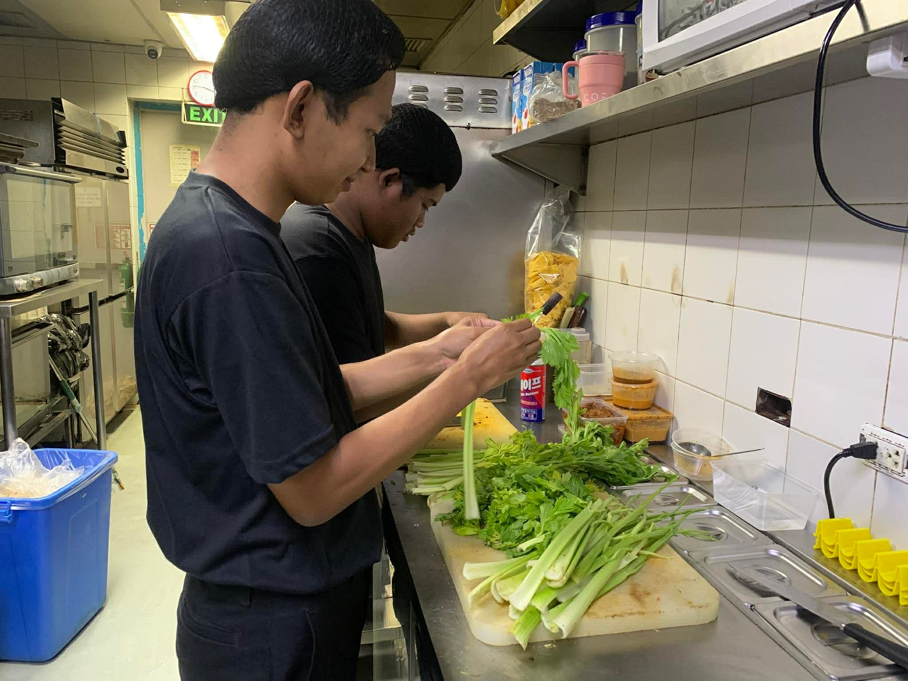
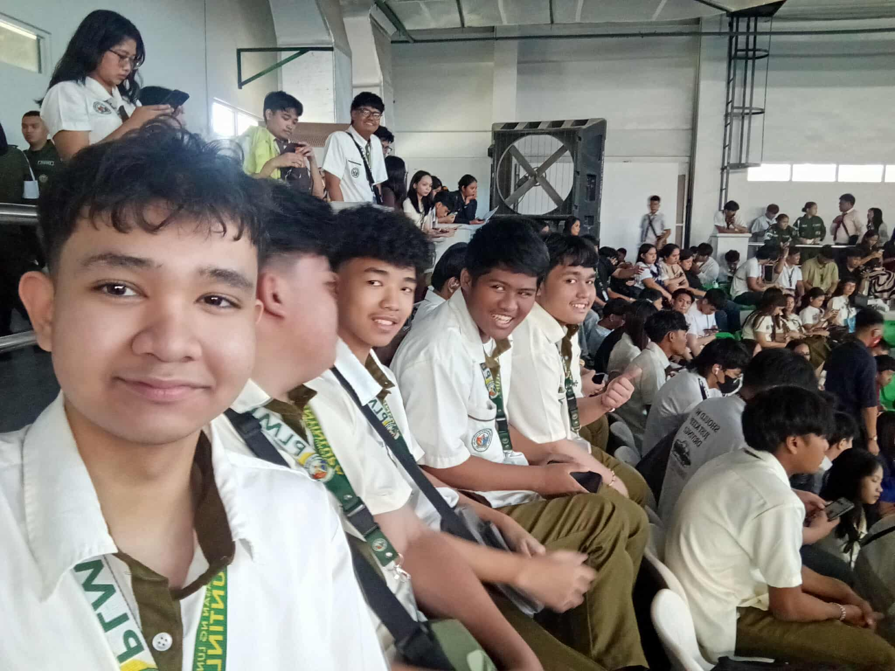
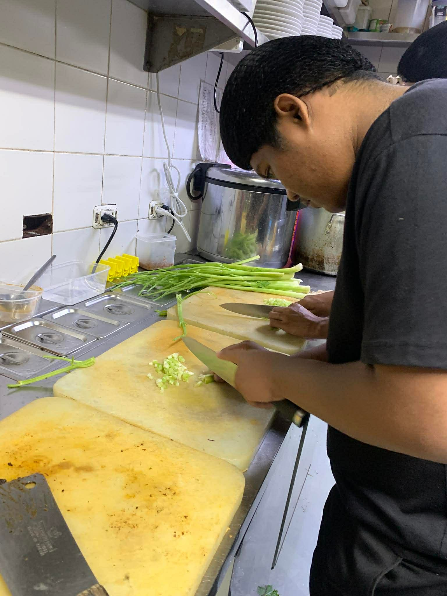
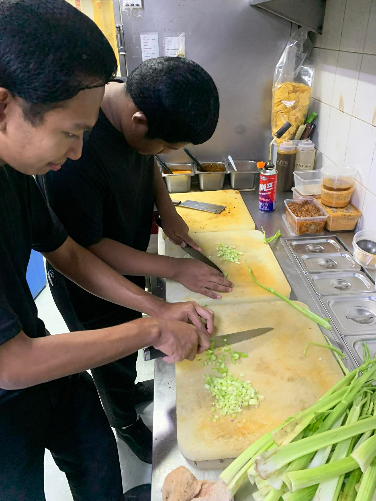

<!DOCTYPE html>
<html lang="en">
<head>
<meta charset="UTF-8">
<meta name="viewport" content="width=device-width, initial-scale=1.0">
<title>Carl Portfolio</title>

<link rel="stylesheet" href="css/profile.css">
<link rel="stylesheet" href="https://cdnjs.cloudflare.com/ajax/libs/font-awesome/6.5.0/css/all.min.css">

</head>

<body>

<!-- your navbar, sections, etc go here -->

<script>
function showSection(id) {
    const sections = document.querySelectorAll("section:not(.pros-cons)");
    sections.forEach(sec => {
        sec.style.display = "none";
    });

    const panels = document.querySelectorAll(".pros-cons");
    panels.forEach(p => p.classList.remove("active"));

    const active = document.getElementById(id);

    if (id === "home") {
        active.style.display = "flex";
    } else {
        active.style.display = "block";
    }
}

function toggleMoreInfo() {
    const section = document.getElementById("more-info");

    if (section.style.display === "block") {
        section.style.display = "none";
    } else {
        section.style.display = "block";
        section.scrollIntoView({ behavior: "smooth" });
    }
}

function scrollToProjects() {
    document.getElementById("projects").scrollIntoView({
        behavior: "smooth"
    });
}

function scrollToProjects() {
    showSection('projects'); // SWITCH SECTION
    setTimeout(() => {
        document.getElementById("projects").scrollIntoView({
            behavior: "smooth"
        });
    }, 100);
}

function toggleProsConsCarl() {
    console.log("BUTTON CLICKED"); 
    const panel = document.getElementById("pros-cons-carl");
    panel.classList.toggle("active");
}

window.addEventListener("load", () => {
    showSection('home');
});
</script>

</body>
</html>

   <body>

    <a href="index.html?skipIntro=true#profiles" class="back-btn">← Back to Profiles</a>

    <!-- NAVBAR -->
     <nav class="navbar">
        <ul>
           <li><a href="#" onclick="showSection('home')">HOME</a></li>
           <li><a href="#" onclick="showSection('about')">ABOUT</a></li>
           <li><a href="#" onclick="showSection('skills')">SKILLS</a></li>
           <li><a href="#" onclick="showSection('projects')">PROJECTS</a></li>
           <li><a href="#" onclick="showSection('contact')">CONTACT</a></li>
        </ul>
     </nav>

     <!-- HOME SECTION -->
<section id="home" class="home carl-bg">

    <div class="overlay"></div> <!-- DARK OVERLAY -->

    <!-- LEFT SIDE (TEXT) -->
    <div class="home-content">

        <!-- NEW SMALL IMAGE -->
         

        <h3 class="role">IT STUDENT</h3>
        <h1>CARL ARIZALA</h1>
        <h2>BSIT-1R</h2>

        <p class="desc">
            A PLMUN IT student who is still learning the basics of programming and web development. 
Eager to improve skills, gain knowledge, and grow through academic projects and hands-on practice.
        </p>

        <div class="buttons">
            <button onclick="scrollToProjects()">▶ View Projects</button>
            <button onclick="toggleMoreInfo()" class="more-btn">More Info</button>
            <button onclick="toggleProsConsCarl()" class="pros-btn">⚡ Pros & Cons</button>
        </div>

    </div> 

</section>

<!-- MORE INFO SECTION (SEPARATE) -->
<section id="more-info" class="more-info">

    <div class="info-grid">

        <div>
            <h3>EDUCATION</h3>
            <ul>
                <li>BSIT - 1R (Current)</li>
                <li>Senior High School Graduate H.E Strand (2023-2025)</li>
            </ul>
        </div>

        <div>
            <h3>EXPERIENCE</h3>
            <ul>
                <li>Student Developer Project</li>
                <li>Videographer</li>
            </ul>
        </div>

        <div>
            <h3>INTEREST</h3>
            <ul>
                <li>Playing game</li>
                <li>Basketball</li>
                <li>Cooking</li>
            </ul>
        </div>

        <div>
            <h3>LANGUAGES</h3>
            <ul>
                <li>English</li>
                <li>Filipino</li>
            </ul>
        </div>

    </div>

</section>
         
     <section id="pros-cons-carl" class="pros-cons">

        <div class="pc-container">

            <!-- HEADER -->
             <div class="pc-header">
                <h2>⚡ Pros & Cons</h2>
                <p>Strengths vs Weaknesses</p>
                <span onclick="toggleProsConsCarl()" class="close-btn">✖</span>
             </div>

            <!-- CONTENT -->
              <div class="pc-content">

                <!-- STRENGTHS -->
                 <div class="pc-box">
                    <h3>STRENGTHS</h3>
                    <div class="card">Active listening 
  - Fully focusing on the speaker, asking clarifying questions, and reflecting back to confirm understanding.</div>
                    <div class="card"> Attention to detail  
   - Noticing small, relevant behaviors or changes in routine.</div>
                
                 </div>

                 <!-- WEAKNESSES -->
                  <div class="pc-box">
                    <h3>WEAKNESSES</h3>
                    <div class="card">Public speaking 
  - as I often feel nervous and struggle to express my thoughts clearly in front of a large audience.</div>
  
                    <div class="card">Difficulty handling criticism – taking feedback too personally instead of using it to improve.</div>
                    
              </div>

        </div>

       </section>


      <!-- ABOUT -->
       <section id="about" class="about">

        <h1 class="about-title">WHAT I DO</h1>

        <!-- ITEM 1 -->
         <div class="about-row">
            <div class="about-text">
                <h3>PLAYING GAMES</h3>
                <p>Playing games has always been one of my favorite hobbies because it gives me both relaxation and excitement. Whether I’m immersed in a challenging video game, competing in online matches with friends, or enjoying a classic board game with family, I find that playing games helps me unwind and connect with others. It’s not just about winning; it’s about the fun, the strategy, and the shared laughter that comes with every round. This hobby keeps my mind sharp, sparks creativity, and provides a perfect balance between entertainment and social interaction.</p>
            </div>

            <div class="about-img">
                
            </div>
         </div>

         <!-- ITEM 2 -->

         <div class="about-row">
            <div class="about-text">
                <h3>PLAYING BASKETBALL</h3>
                <p>Basketball is one of my favorite hobbies because it keeps me active while also giving me a chance to have fun with friends. I enjoy the thrill of running across the court, practicing my shots, and improving my skills with every game. Playing basketball helps me stay healthy, build teamwork, and release stress after a busy day. It’s more than just a sport to me—it’s a way to challenge myself, stay motivated, and enjoy the energy of competition</p>
            </div>

            <div class="about-img">
                
            </div>
         </div>

       </section>

      <!-- SKILLS --> 
       <section id="skills" class="skills-box">

        <h1 class="skills-title">SKILLS

            <div class="skills-wrapper">

            <!-- LEFT: BLACK BOX (TEXT ONLY) -->
            <div class="skills-content carl-skills-content">

               <h3>🧠 WHAT I DO BEST</h3>

               <ul>
                    <li>One of my strongest skills is the ability to communicate effectively with other people and to observe their body language. I find it easy to connect with others by listening carefully, expressing myself clearly, and paying attention to nonverbal cues such as gestures, facial expressions, and posture. This skill allows me to understand people better, build trust, and respond appropriately in different situations. By combining good communication with keen observation, I can create meaningful interactions and strengthen relationships both personally and professionally.</li>

                    </ul>

                </div>

                    <!-- RIGHT: IMAGES -->
                     <div class="skills-images">
                        
                        

                     </div>

                </div>
                        
        </h1>
       </section>


       <!-- PROJECTS -->
        <section id="projects" class="projects">

            <h1 class="projects-title">PROJECTS</h1>

            <div class="projects-container">

                <!-- LEFT SIDE -->
                 <div class="projects-left">

                    <div class="project-box">
                        <h3>FOOD PREPARATION</h3>
                        <p>
                        During my work immersion at Gringo in the kitchen, I was able to experience firsthand the fast-paced and dynamic environment of food preparation. I learned how important teamwork and communication are in ensuring that dishes are prepared efficiently and with quality. From assisting with basic tasks like chopping ingredients to observing how chefs manage timing and presentation, I gained valuable skills that taught me discipline and attention to detail. The experience also helped me appreciate the effort behind every meal served, and it inspired me to develop a stronger work ethic and passion for learning in a professional setting.</p>
                    </div>

                </div>

                <!-- RIGHT SIDE -->
                 <div class="projects-right">
                    
                    
                 </div>

            </div>

        </section>

        <!-- CONTACT -->
         <section id="contact" class="contact">
            <div class="contact-container">

                <!-- LEFT SIDE -->
                 <div class="contact-info">
                    <h1>LET'S WORK TOGETHER</h1>

                    <p><strong>Email</strong><br>carlarizala8@gmail.com</p>
                    <p><strong>Phone</strong><br>+63 969 349 4169</p>

                    <p><strong>Follow me</strong></p>
                    <div class="socials">
                        <a href="https://www.facebook.com/carl.arizala.2025" target="_blank">
                            <i class="fab fa-facebook"></i>
                        </a>

                        <a href="https://www.instagram.com/peak_boo07/" target="_blank">
                            <i class="fab fa-instagram"></i>
                        </a>
                     </div> 
                     
                </div>

                <!-- RIGHT SIDE -->
                 <div class="contact-form">
                    <input type="text" placeholder="Name">
                    <input type="email" placeholder="Email">
                    <textarea placeholder="Message"></textarea>
                    <button>Submit</button>
                 </div>
         </section>

</body>
</html>